install.packages("palmerpenguins")Plotting 3: histogram, density, and bar plots
plotting
ggplot2
1 Introduction
Recap of the past session
In last week’s session, we delved into aesthetics and gained a deeper understanding of the topic. Additionally, we introduced the theme() function. We also acquired knowledge on the fundamentals of geom_boxplot(), geom_violin(), and stat_summary.
Session Goals
- Let’s explore our palmerpinguins dataset using histogram and density plots. We will learn about geom_histogram() and geom_density().
- Learn the basic of bar graph in
ggplot2.
2 Our data set
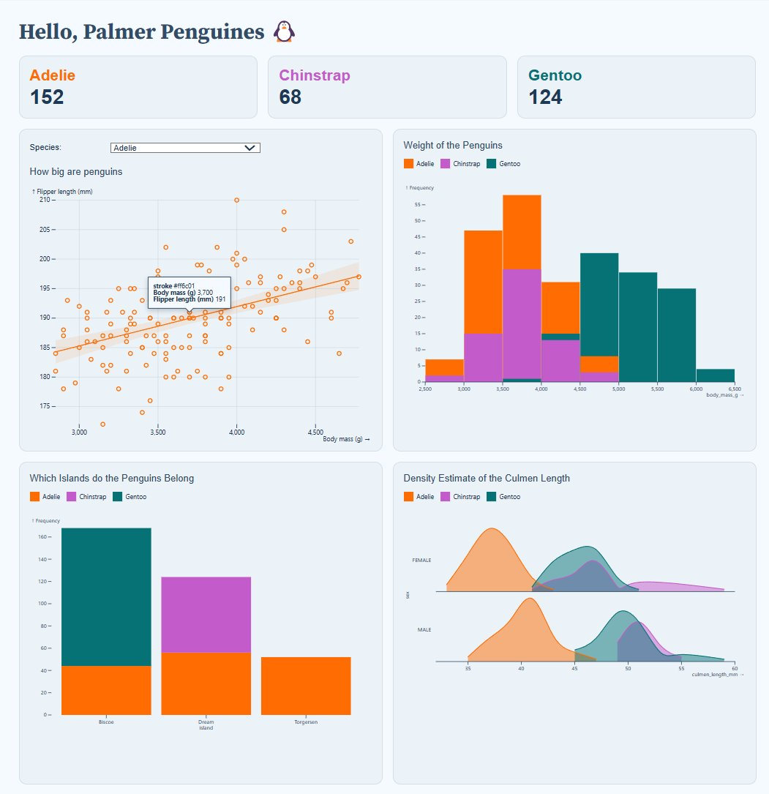
We are going to continue using our 🐧 data set from the package palmerpenguins. If you haven’t done so, please install that package first:
palmerpenguins is a package developed by Allison Horst, Alison Hill and Kristen Gorman, including a data set collected by Dr. Kristen Gorman at the Palmer Station Antarctica, as part of the Long Term Ecological Research Network. It is a nice, relatively simple data set to practice data exploration and visualization in R.
We’ll now load the package, along with the tidyverse (which includes ggplot2):
library(palmerpenguins)
library(tidyverse)── Attaching core tidyverse packages ──────────────────────── tidyverse 2.0.0 ──
✔ dplyr 1.1.3 ✔ readr 2.1.4
✔ forcats 1.0.0 ✔ stringr 1.5.1
✔ ggplot2 3.4.4 ✔ tibble 3.2.1
✔ lubridate 1.9.2 ✔ tidyr 1.3.0
✔ purrr 1.0.2
── Conflicts ────────────────────────────────────────── tidyverse_conflicts() ──
✖ dplyr::filter() masks stats::filter()
✖ dplyr::lag() masks stats::lag()
ℹ Use the conflicted package (<http://conflicted.r-lib.org/>) to force all conflicts to become errorsOnce you’ve loaded that package you will have a data frame called penguins at your disposal — let’s take a look:
# Or glimpse() for a sort of transposed view, so we can see all columns:
glimpse(penguins)Rows: 344
Columns: 8
$ species <fct> Adelie, Adelie, Adelie, Adelie, Adelie, Adelie, Adel…
$ island <fct> Torgersen, Torgersen, Torgersen, Torgersen, Torgerse…
$ bill_length_mm <dbl> 39.1, 39.5, 40.3, NA, 36.7, 39.3, 38.9, 39.2, 34.1, …
$ bill_depth_mm <dbl> 18.7, 17.4, 18.0, NA, 19.3, 20.6, 17.8, 19.6, 18.1, …
$ flipper_length_mm <int> 181, 186, 195, NA, 193, 190, 181, 195, 193, 190, 186…
$ body_mass_g <int> 3750, 3800, 3250, NA, 3450, 3650, 3625, 4675, 3475, …
$ sex <fct> male, female, female, NA, female, male, female, male…
$ year <int> 2007, 2007, 2007, 2007, 2007, 2007, 2007, 2007, 2007…3 Histograms: geom_histogram()
A histogram provides a precise graphical portrayal of the distribution of numerical data. It only needs one aesthetic, which is the x variable.
ggplot(penguins, aes(x = flipper_length_mm)) +
geom_histogram() +
labs(title = "Histogram of penguin flipper length")`stat_bin()` using `bins = 30`. Pick better value with `binwidth`.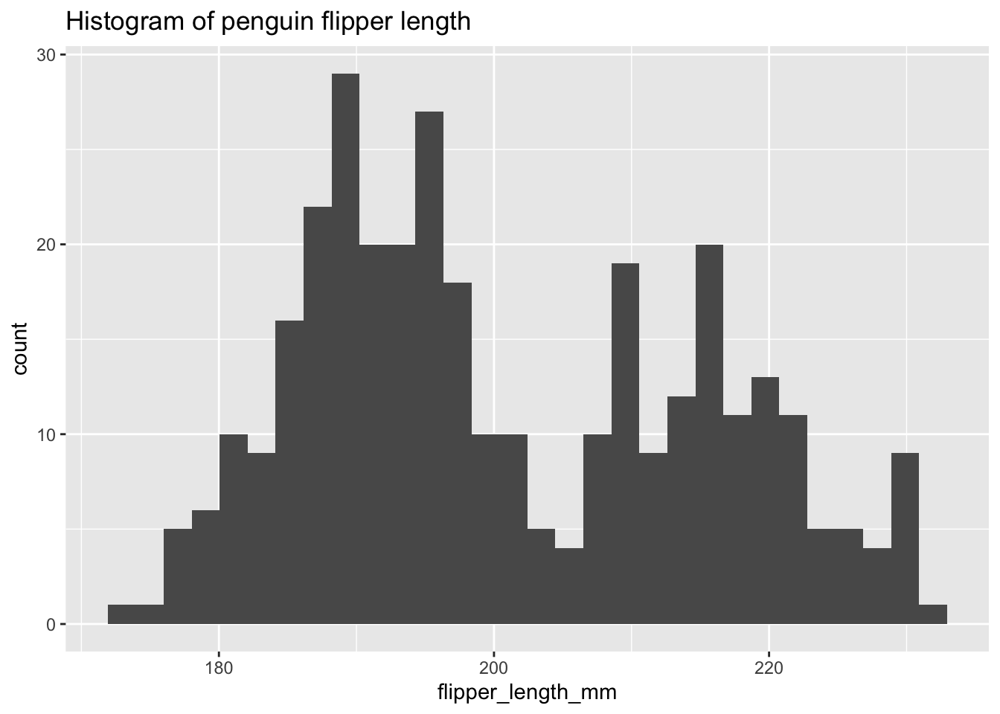
WarningIt is crucial to have good labels to ensure the accessibility of your plots to a broader audience. Always make sure that the axis (within
labs(), use x="x-title", y="y-title") and legend (within labs(), use fill/color="legend-title") labels display the complete variable name.
The default computation of geom_histogram through stat_bin uses 30 bins, which is not always an optimal choice.
There are possible options to address this issue. One option is to set the number of bins using the bins argument. Another option is to adjust the width of each bin using the binwidth argument.
The number of bins or bars in the histogram can be customized using the bins argument in the geom_histogram function.
An alternative option involves utilizing the binwidth argument in the geom_histogram function, which dictates the width of each bin on the X-axis. It is important to note that this argument takes priority over the bin argument.
Exercise 1
- Using the example from above, within
geom_histogram()use thebinsandbinwidtharguments to change the size of each bar/bin.
Hints (click here)
You can use the following argument geom_histogram(bins = TRY DIFFERENT VALUES) or geom_histogram(binwidth = TRY DIFFERENT VALUES).
Solutions (click here)
ggplot(penguins, aes(x = flipper_length_mm)) +
geom_histogram(binwidth = 2) +
labs(title = "Histogram of penguin flipper length")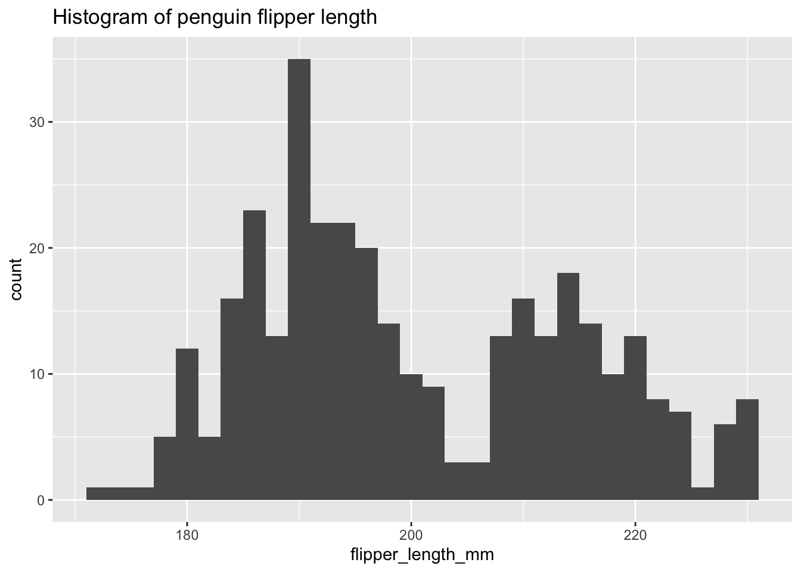
ggplot(penguins, aes(x = flipper_length_mm)) +
geom_histogram(bins = 13) +
labs(title = "Histogram of penguin flipper length")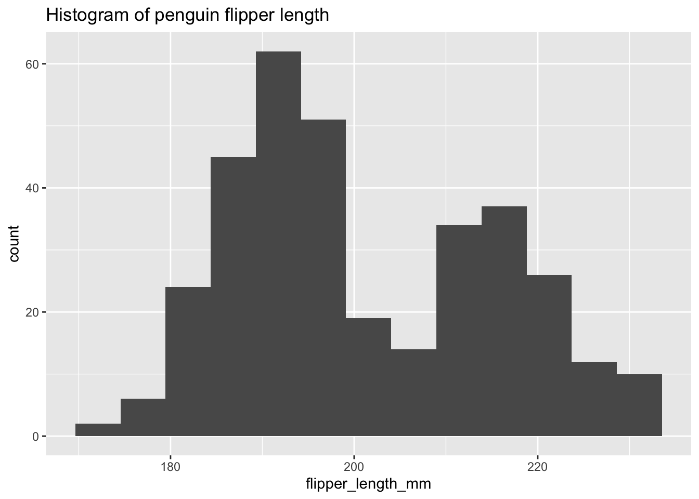
3.1 Is the distribution bimodal?
Histograms are effective in displaying the distributional characteristics of variables within a dataset. They provide visual cues regarding the location of distribution peaks, whether the distribution is skewed or symmetric, and the presence of any outliers. However, given that our dataset consists of three distinct species, can we utilize histograms to analyze all of them simultaneously?
ggplot(penguins) +
aes(x = flipper_length_mm, color = species) +
geom_histogram(bins = 30) +
theme_bw() +
theme(legend.position = "bottom") +
labs(title = "Histogram of penguin flipper length",
subtitle = "By species",
color = "Penguin species")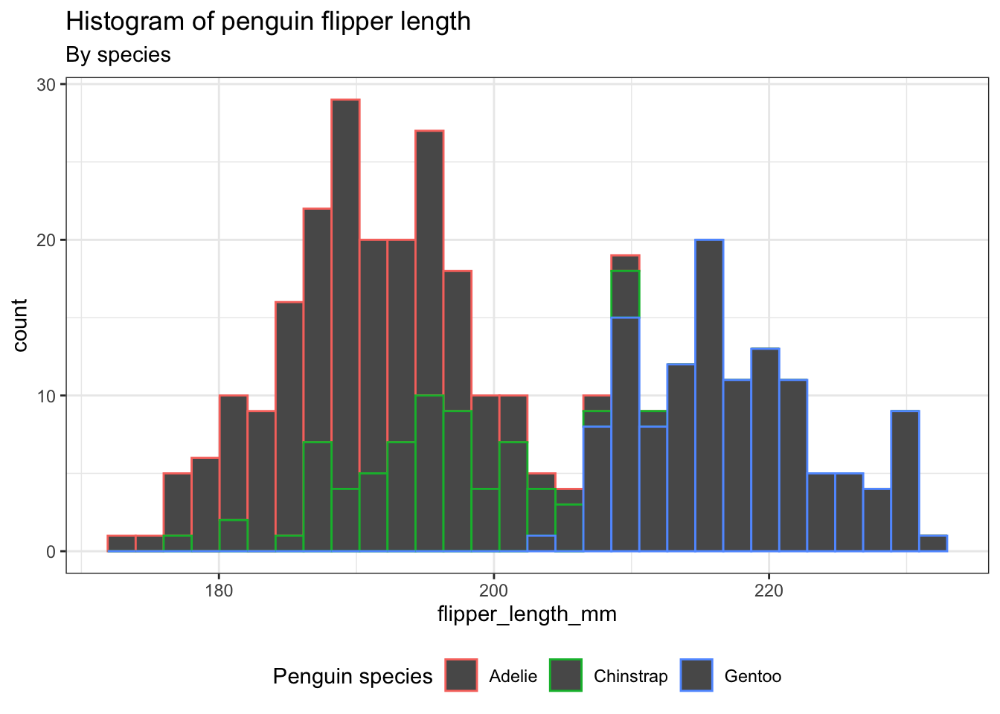
WarningThemes are a powerful way for customizing the non-data elements of your plots, such as titles, labels, fonts, background, gridlines, and legends. They can be employed to provide plots with a consistently customized appearance.
Exercise 2
- Instead of coloring only the outline of the
bins, let’s color thebinsthemselves.
Hints (click here)
You will have to use the argument fill. Please be sure that your legend title, adjusted using labs(), has been properly set.
Solutions (click here)
ggplot(penguins) +
aes(x = flipper_length_mm, fill = species) +
geom_histogram(bins = 30) +
theme_bw() +
theme(legend.position = "bottom") +
labs(title = "Histogram of penguin flipper length",
subtitle = "By species",
fill = "Penguin species")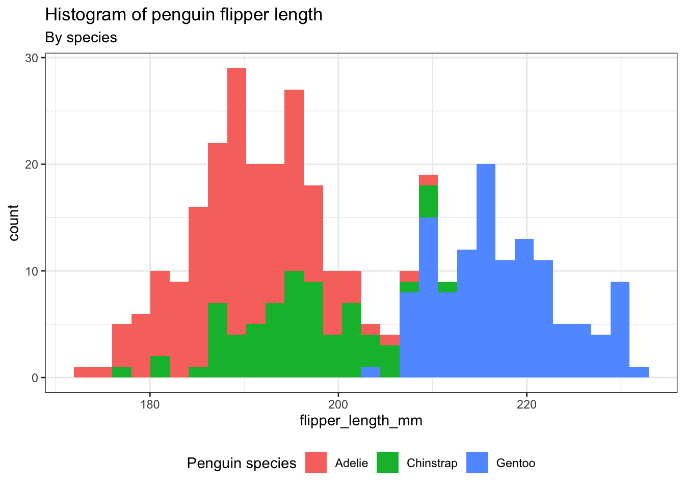
4 Density plot: geom_density()
A density plot provides an alternative way to visualize the distributions of numerical variables. It is essentially a smoothed version of a histogram and serves as a practical option, especially when dealing with continuous data originating from a smooth underlying distribution.
ggplot(penguins) +
aes(x = flipper_length_mm, color = species) +
geom_density() +
theme_bw() +
theme(legend.position = "bottom") +
labs(title = "Density plot of penguin flipper length",
subtitle = "By species",
color = "Penguin species")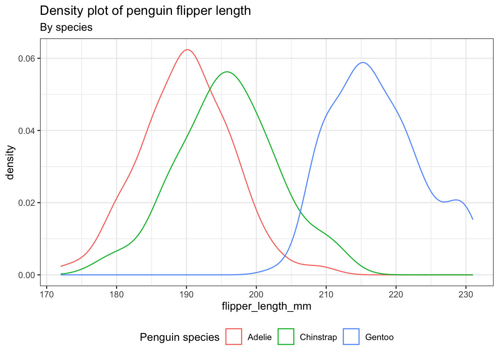
Exercise 3
Let’s analyze the distribution of penguins’ body mass according to their species utilizing density plots. - Incorporate distinct colors for each species in the density plots, not just the lines. Employ a level of transparency to provide a clearer view. Please ensure that the density plot is accompanied by a title, subtitle, and caption.
Hints (click here)
You will have to use the argument fill to incorporate color, alpha for transparency, and caption within the labs argument.
Solutions (click here)
ggplot(penguins) +
aes(x = body_mass_g, fill = species) +
geom_density(alpha = 0.2) +
theme_bw() +
theme(legend.position = "bottom") +
labs(title = "Density plot of penguin body mass",
subtitle = "By species",
caption = "PalmerPinguins Dataset",
fill = "Penguin species")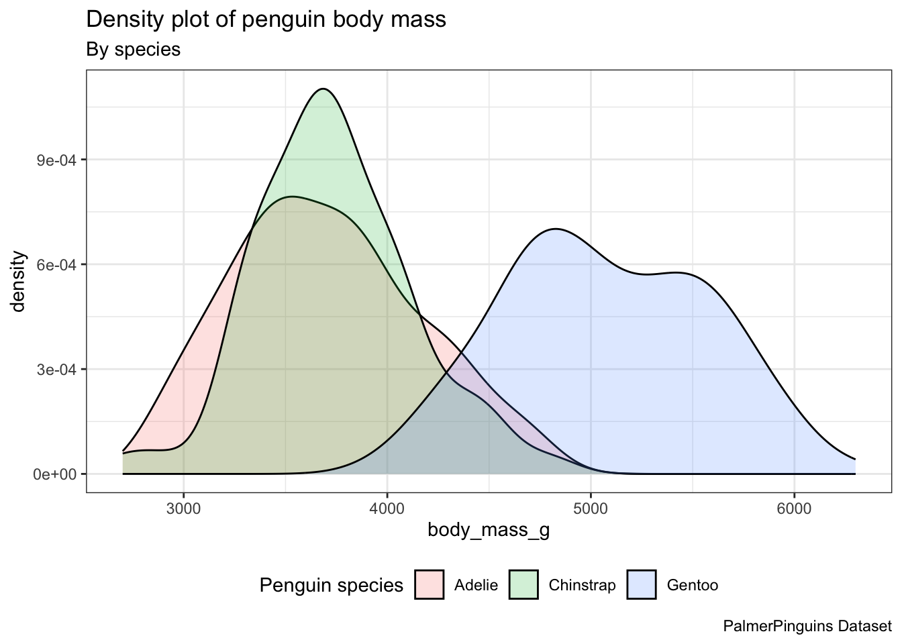
5 Geoms from ggplot “extension” packages
Transparency can help when density plots ovelap, but can I do better?
There are various ggplot extension packages available. Some of these packages provide extra geoms, such as the trendy “ridgeline” plots offered by the ggridges package.
Transparency can help when density plots ovelap, but can I do better?
There are various ggplot extension packages available. Some of these packages provide extra geoms, such as the trendy “ridgeline” plots offered by the ggridges package.
We’ll have to install the package:
install.packages("ggridges")After loading it, we can utilize the ridgeplot geom geom_density_ridges() in the same manner as any other geom.
library(ggridges)
ggplot(penguins) +
aes(x = body_mass_g, y = species, fill = species) +
geom_density_ridges(alpha = 0.2) +
theme_bw() +
theme(legend.position = "bottom") +
labs(title = "Density plot of penguin body mass",
subtitle = "By species",
caption = "PalmerPinguins Dataset",
fill = "Penguin species") Picking joint bandwidth of 153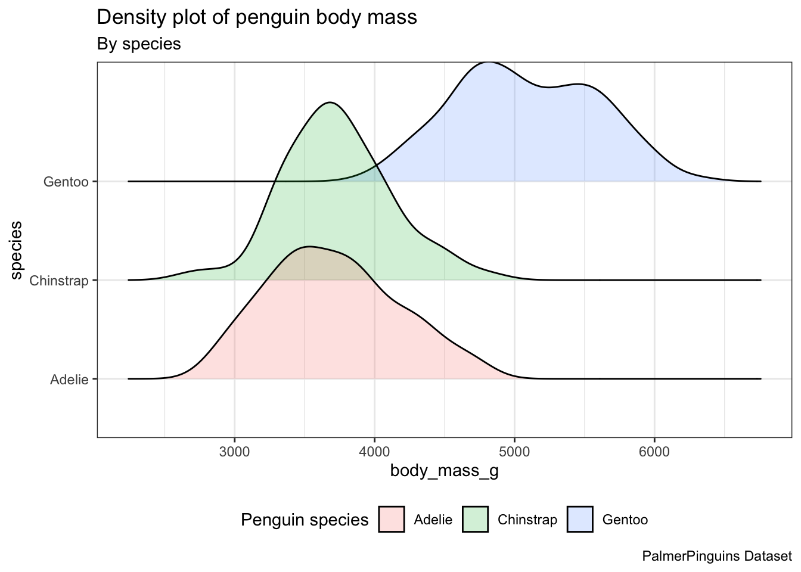
WarningPlease note that when using
geom_density_ridges(), we need to specify the y.
6 Bar graphs: geom_bar()
In order to analyze the distribution of a categorical variable, a bar chart can be employed. The bar heights indicate the frequency of observations associated with each x value.
ggplot(penguins, aes(x = species)) +
geom_bar()
6.1 Stacked bar plots.
Stacked bar plots can be utilized to visualize the association between two categorical variables. For instance, these two stacked bar plots demonstrate the relation between island and species, showcasing the distribution of species within each island.
Stacked bar plots can be utilized to visualize the association between two categorical variables. For instance, these two stacked bar plots demonstrate the relation between island and species, showcasing the distribution of species within each island.
The first plot displays the frequencies of penguin species on different islands. It reveals that there is an equal number of Adelies on each island. Nonetheless, we lack a clear understanding of the percentage distribution within each specific island.
ggplot(penguins, aes(x = island, fill = species)) +
geom_bar()
The second plot, which is a relative frequency plot created by setting position = "fill" in the geom, is more useful for comparing species distributions across islands because it is not influenced by the unequal numbers of penguins on the islands.
ggplot(penguins, aes(x = island, fill = species)) +
geom_bar(position = "fill")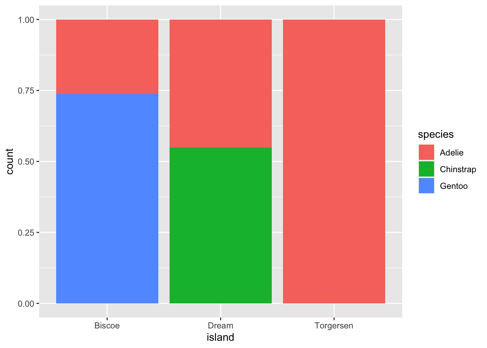
By using this plot, we can see that Gentoo penguins exclusively live on Biscoe Island and represent approximately 75% of the penguins on that island. Chinstrap penguins exclusively inhabit Dream Island and make up approximately 50% of the penguins on that island. Whereas Adelie penguins inhabit all three islands and account for the entire penguin population on Torgersen Island.
7 Bar chart of means: stat_summary()
To summarize the data using averages, we can use the stat_summary() function. Instead of invoking a geom_* function, we can employ stat_summary() to define the desired method for summarizing the data and presenting it in our visual representation.
ggplot(penguins, aes(x = species, y = body_mass_g)) +
theme_bw() +
stat_summary(fun = "mean",
geom = "bar",
alpha = 0.5,
color = "black",
size = 0.5,
mapping = aes(fill = species)) +
stat_summary(fun.data = "mean_se",
geom = "errorbar",
width = 0.5)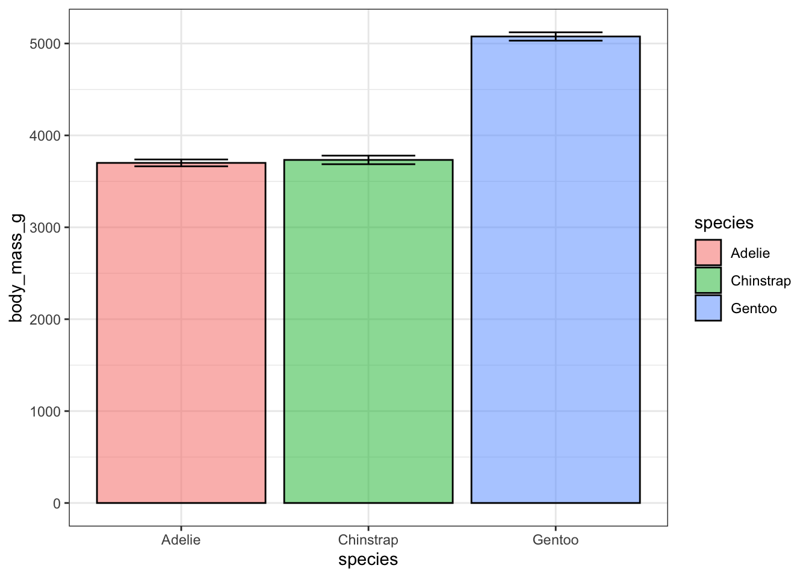
Exercise 4
- To keep only the Gentoo data, pipe your dataset into the
filter()function. - Create a bar graph examining the mean bill_length_mm by sex by piping the filtered data into
ggplot(). - Ensure that the points with unknown sex (NA) are removed.
- Include error bars in the bar plots and add transparency.
- Display all data points on top of the boxplot.
- Finally, use color to fill every bar by using the “DarSet2” palette from the “RColorBrewer” package, which was installed last week.
Hints (click here)
You will have to load RColorBrewer and use the argument scale_fill_brewer(palette = "Dark2").
Solutions (click here)
penguins |>
filter(species == "Gentoo", !is.na(sex)) |>
ggplot(aes(x = sex, y = bill_length_mm)) +
theme_bw() +
stat_summary(geom = "bar",
fun = "mean",
alpha = 0.5,
color = "black",
size = 0.5,
mapping = aes(fill=sex)) +
stat_summary(fun.data = "mean_se",
geom = "errorbar",
width = 0.5) +
scale_fill_brewer(palette = "Dark2")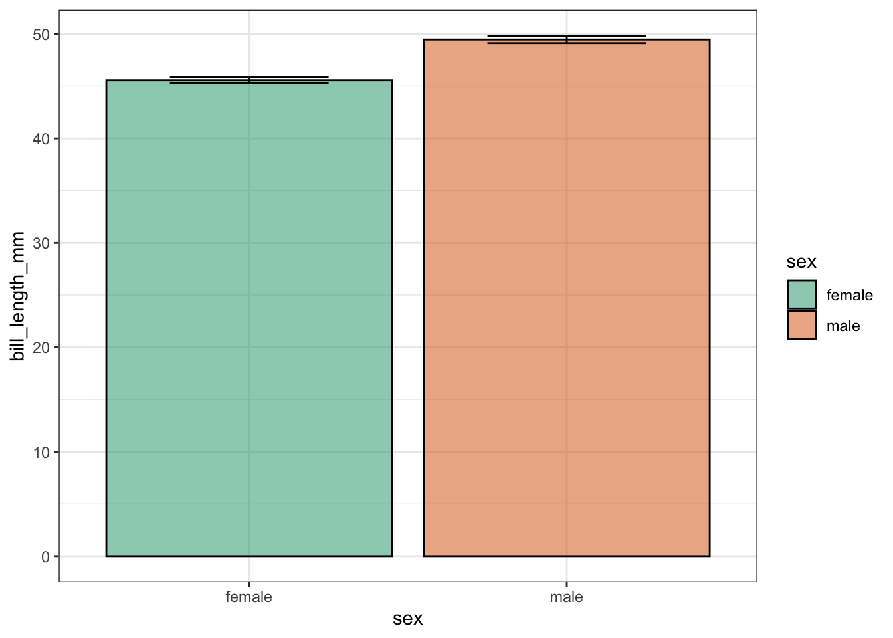